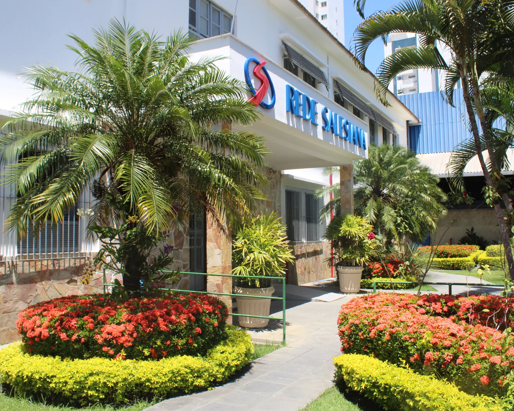

Colégio Laura Vicunha
Formando bons cristãos e honestos cidadãos

O Colégio Laura Vicunha começou em 1949 a construir a
sua
historia junto
à comunidade
campista, dedicando-se, de modo especial, à criança e ao adolescente,
proporcionando-lhes
uma educação de qualidade embasada no Sistema Preventivo de Dom Bosco
que é
a de
"Formar o
bom cristão e o honesto cidadão", capaz de influenciar positivamente na
sociedade.
O Colégio é gerido pelas Irmãs Salesianas, também congregação fundada
por
Dom
Bosco, que
tinha uma grande devoção pela Virgem Maria que, segundo ele, "foi Ela
quem
tudo
fez" e nela
colocou toda a sua confiança. Além disso, Dom Bosco confiava muito em
São
Francisco Sales,
que pautou sua vida na caridade e doçura. Acreditava que seus passos
iriam
guiar
seu
trabalho. Por isso, a escolha do termo "Salesiano".
As Salesianas constituem uma rede mundial de educação,
inserida
nos diversos contextos sociais e culturais. São chamadas a uma missão
educativa,
que se fundamenta nos principios evangélicos, expressos no Sistema Educativo
de
Dom Bosco e de Madre Mazzarello, que baseia em três principios basicos:
Razão, que desperta nos jovens o entusiasmo pelo estudo, pela pesquisa, pela busca de convicções, pela construção do conhecimento e pela re-significação da realidade
Razão, que desperta nos jovens o entusiasmo pelo estudo, pela pesquisa, pela busca de convicções, pela construção do conhecimento e pela re-significação da realidade
Religião, que é a dimensão da fé, da relação com o
transcendente, que oferece ao jovem a chave de interpretação do mundo e de
si
mesmo e que dá o significado ultimo da existência, como fonte de equilibrio
e
sentido para a vida.
A "Amorevoleza" (amor), que é a dimensão dos sentimentos, uma prática educativa orientada para as relações humano-éticas: "Educar é questão de coração", dizia Dom Bosco. Fazemos parte da Rede Salesiana de Escolas (RSE). E isso significa interagir junto a mais de cem Escolas Salesianas do Brasil, comprometidas com o mesmo Projeto Pedagógico, que visa a despertar a valorização da vida, o respeito pelo meio ambiente, o incentivo ao aprendizado continuo e a convivência solidária
A "Amorevoleza" (amor), que é a dimensão dos sentimentos, uma prática educativa orientada para as relações humano-éticas: "Educar é questão de coração", dizia Dom Bosco. Fazemos parte da Rede Salesiana de Escolas (RSE). E isso significa interagir junto a mais de cem Escolas Salesianas do Brasil, comprometidas com o mesmo Projeto Pedagógico, que visa a despertar a valorização da vida, o respeito pelo meio ambiente, o incentivo ao aprendizado continuo e a convivência solidária
Desencadear um processo de EDUCAR-SE, tendo em vista o seu harmônico e integral
crescimento,
sendo sujeito protagonista do desenvolvimento de todas as suas potencialidades e
dimensões
do ser, elaborando a sua própria identidade, construindo sua autonomia intelectual,
social e
afetiva, exercendo a sua cidadania no engajamento nos diversos setores socio-eclesiais a
serviço da vida concretizando assim, o ideal de "bons cristãos e honestos cidadãos".
Inspira seu trabalho educativo nos princípios estruturados a partir da LDB 9394/96:
cidadania, participação, democracia, liberdade, solidariedade, vinculado com o trabalho,
práticas sociais e o crescimento da experiencia extraclasse, tendo por fim, a formação
de
cidadãos. Livres para aprender, ensinar, pesquisar e divulgar a cultura, o pensamento, a
arte e o saber. Capazes de compreender, assumir criticamente a realidade social,
conscientes
de seus direitos, deveres e responsabilidades.
Que respeitem a liberdade e sejam contrários a toda a forma de exploração, opressão,
desrespeito a pessoa, a natureza e ao patrimônio cultural da humanidade. Capazes de
respeitar e conviver com diferentes condições filosóficas, religiosas, rejeitando
qualquer
tratamento desigual por motivo de preconceito, classe ou racial.
Baseia-se conforme os princípios da Constituição Nacional, dos Princípios Cristãos e da
Pedagogia de Dom Bosco.
O Ensino Fundamental, com duração de nove anos letivos, tem por finalidade a formação do cidadão mediante: "o desenvolvimento da capacidade de aprender, tendo como meios básicos o pleno domínio da leitura, da escrita e da lógica, do raciocínio, da pesquisa e da interpretação de dados; a compreensão do meio ambiente natural e social, do sistema político, da ciência aplicada, da arte e dos valores em que se fundamenta a sociedade".
A primeira fase do Ensino Fundamental compreende as turmas de 1º ao 5º ano, e o segundo segmento, do 6º ao 9º ano. Em todas as fases aplica-se a pedagogia salesiana, onde tudo converge para formar a pessoa na sua totalidade, como ser humano, seguindo os três pilares: razão, religiosidade e afetividade (amorevolezza)
Razão, no sentido de criar e garantir, num relacionamento dialógico, a autonomia intelectual do aluno, que conhece e assume as 'razoes' de tudo aquilo que estuda e vivência, inclusive de seus limites.
Religiosidade como abertura ao sentido radical da vida e dos valores evangélicos, com atitude ecumênica e dialógica
Afetividade, como clima educativo de confiança, compreensão, alegria e amor, que favorece o relacionamento educador-educando e estimule o crescimento pessoal, de forma livre e comprometida
O Colégio Laura Vicunha baseado na LDB e nos Parâmetros Curriculares Nacionais, tendo como alicerce a Pedagogia Salesiana, tem como prioridade contribuir para a formação de alunos críticos, reflexivos, solidários e que saibam respeitar as diferenças culturais, sociais, políticas, religiosas, enfim saber respeitar o seu próximo.
A busca por uma prática educativa reflexiva, emancipatória e transformadora, tendo como meio a interdisciplinaridade para que possamos contribuir para uma aprendizagem significativa e colaborativa.
Para isso, o Colégio oferece a formação fundamental objetivando o educando e dando-lhe condições de aprendizagem para desenvolver habilidades comuns como:
Formação do leitor do mundo (letramento).
Formação do escritor para o mundo.
Domínio do cálculo e do raciocínio logico.
Aprender a aprender.
Formação de atitudes e valores.
Autoestima, confiança, ética e inter-relacionamento com o próximo.
Criticidade da realidade e autenticidade na resolução de situações problemas.
Trabalhar os conteúdos mínimos de acordo com o material da RSE que se fundamenta de acordo com os PCNs. Além dos conceitos específicos, constituem conteúdos mínimos do currículo a aprendizagem e o exercício de habilidades comuns a todas as áreas que são: leitura e interpretação de diferentes linguagens; escrita; expressão oral; análise e interpretação de fatos e ideias e mobilização de informações, conceitos e procedimentos em situações diversas.
A adaptação ao material da RSE é indispensável para o sucesso do processo ensino-aprendizagem que se dá por meio das múltiplas relações que o educando estabelece entre os diferentes significados desse mesmo conceito. Assim, a compreensão do que é apreendido e sua estabilização como aprendizagem significativa dependem da qualidade e quantidade dessas relações.
Nossa escola faz parte de uma grande família nascida da experiência de resposta de fé de Dom Bosco e Madre Mazzarello ao chamado de Deus para a educação e salvação dos jovens, família Salesiana.
Ela se propõe a educar, desenvolvendo o sujeito como pessoa que se relaciona consigo mesmo, com o outro, com o mundo e com Deus.
Acredita numa educação comprometida com a liberdade, justiça e dignidade que respeita as diferenças individuais e ao mesmo tempo cultiva a consciência coletiva, o bem comum, a cidadania: "Bons cristãos e honestos cidadãos", que valoriza a pessoa com suas potencialidades. D. Bosco acreditava que em todo o jovem havia sempre um ponto acessível ao bem, guiado por critérios éticos, a serviço da vida e da esperança. Uma educação, que privilegie o aprender a ser, o aprender a aprender e o aprender a conviver.
O jeito de Dom Bosco educar chama-se Sistema Preventivo e nossa escola procura vivenciá-lo, por vocação e missão. Este sistema se fundamenta em três eixos: Razão - Religião - Amorevolezza.
Razão: Entendemos por razão o despertar para a consciência crítica, a busca de fundamentos e razões da própria existência, o diálogo, a participação e corresponsabilidade. É a busca da verdade de si mesmo, do outro, do mundo (ciência) e Deus.
Religião: A pessoa busca o sentido da vida e a alegria de viver. Através de uma convivência integradora, experienciando a unidade pessoal, a mística, orientação com base no Evangelho, educadores e educandos abrem-se aos valores do humano e do transcendente, buscando construir o próprio projeto de vida, enquanto se inserem na comunidade de fé
Amorevolleza: Quem percebe que é amado, torna-se também capaz de sair de si e amar os outros. A presença salesiana se identifica pelas atitudes de acolhida, bondade, alegria e fraternidade, que criam um clima de família. A afeição demonstrada é o "tempero" de tudo. Através de uma convivência aproximada e prazerosa, educadores e educandos experienciam a criatividade, a subjetividade, o emocional, o afetivo, a comunicabilidade, o diálogo, a amizade, a alegria de viver.
Estes princípios que indicam uma visão harmônica da pessoa dotada de razão, afetividade, vontade, abertura ao transcendente. Nesse sentido, o sistema preventivo é um exemplo de humanismo pedagógico cristão, onde a centralidade da fé está indissoluvelmente unida à apreciação dos valores presentes na história.
Em nível metodológico, o nosso projeto educativo tem em mira orientar os jovens para a escolha do bem e guiar a sua riqueza afetiva para o dom de si, ajudando a superar gradualmente o egocentrismo da adolescência, e acompanhando-os para o encontro transformador com Deus, em Cristo. O sistema preventivo, original síntese de educação e evangelização, orienta os jovens para que se tornem "bons cristãos e honestos cidadãos".
000
ESCOLAS
000 MIL
ALUNOS
000 MIL
PROFESSORES
RSB
Seja bem-vindo à maior rede de escolas católicas das Américas.
Matriculas Abertas 2025
Garanta sua vaga e venha fazer parte da nossa jornada de aprendizado.
Nosso Aplicativo oficial


Redes sociais do Laura Vicunha